分组，或者平铺。
按发件人分组看全局，切到平铺一封封过。几个邮箱的来信放在同一个收件箱里，每封都标着来自哪个邮箱。
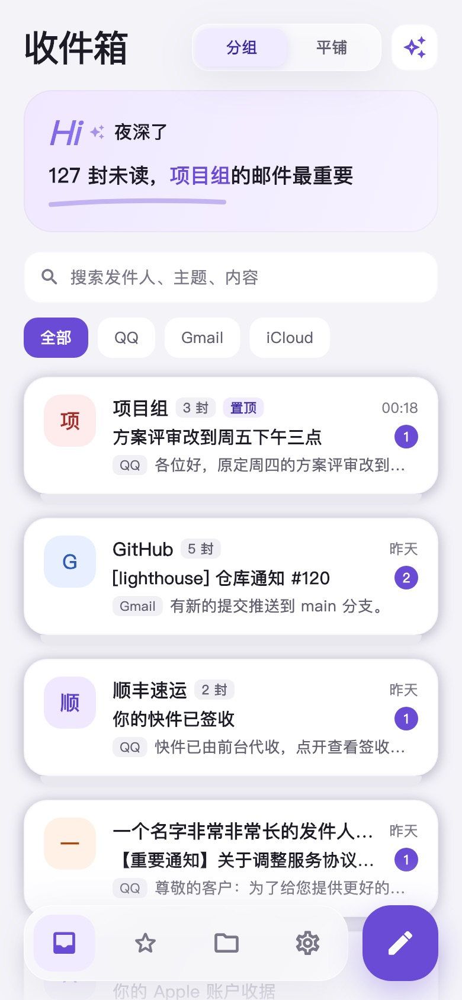
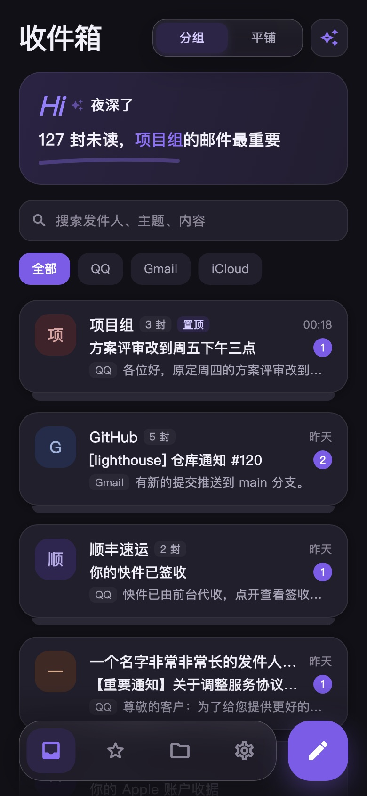
把同一个人的来信归成一组，最重要的那封放在最前面。写信像写文档，回信可以交给 AI 起草，发不发由你决定。
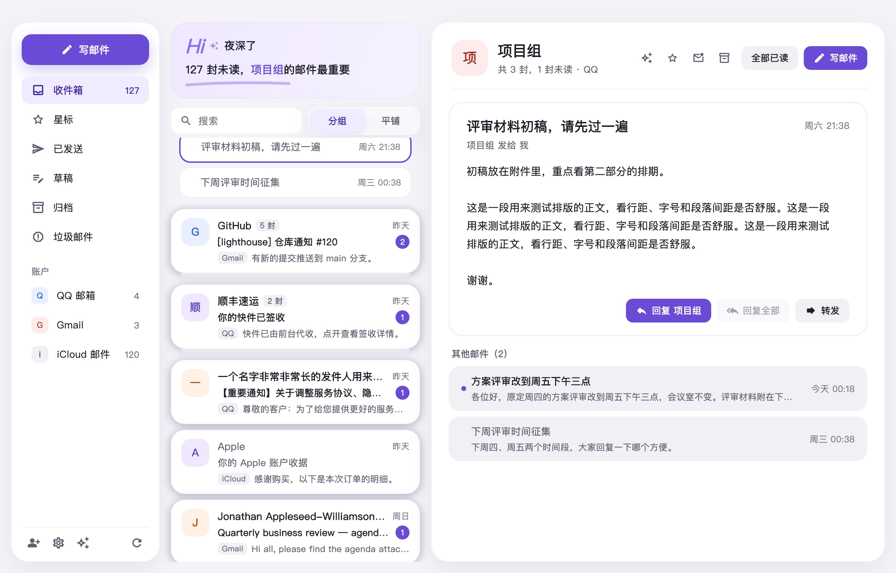
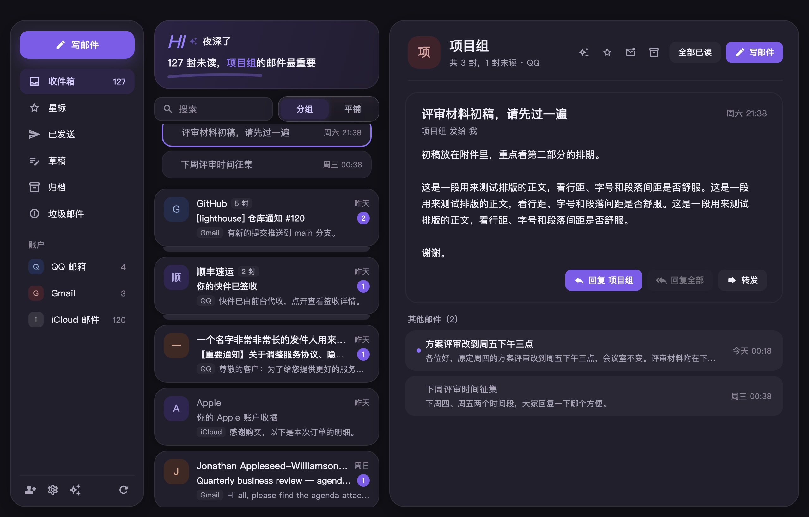
同一个发件人的来信叠成一组，依旧按时间排序。顶部一句话告诉你有几封未读、谁的邮件最要紧。
按发件人分组看全局，切到平铺一封封过。几个邮箱的来信放在同一个收件箱里，每封都标着来自哪个邮箱。


加粗、列表、引用、链接，图片直接粘进正文，附件拖进来就行。超过 20 MB 会先提醒你。
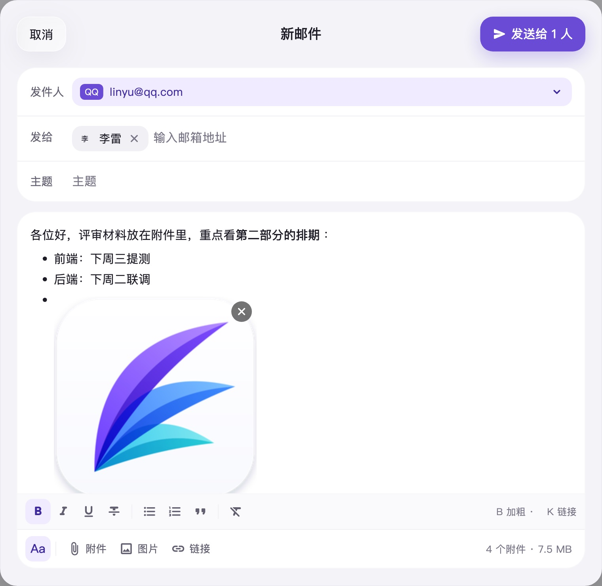
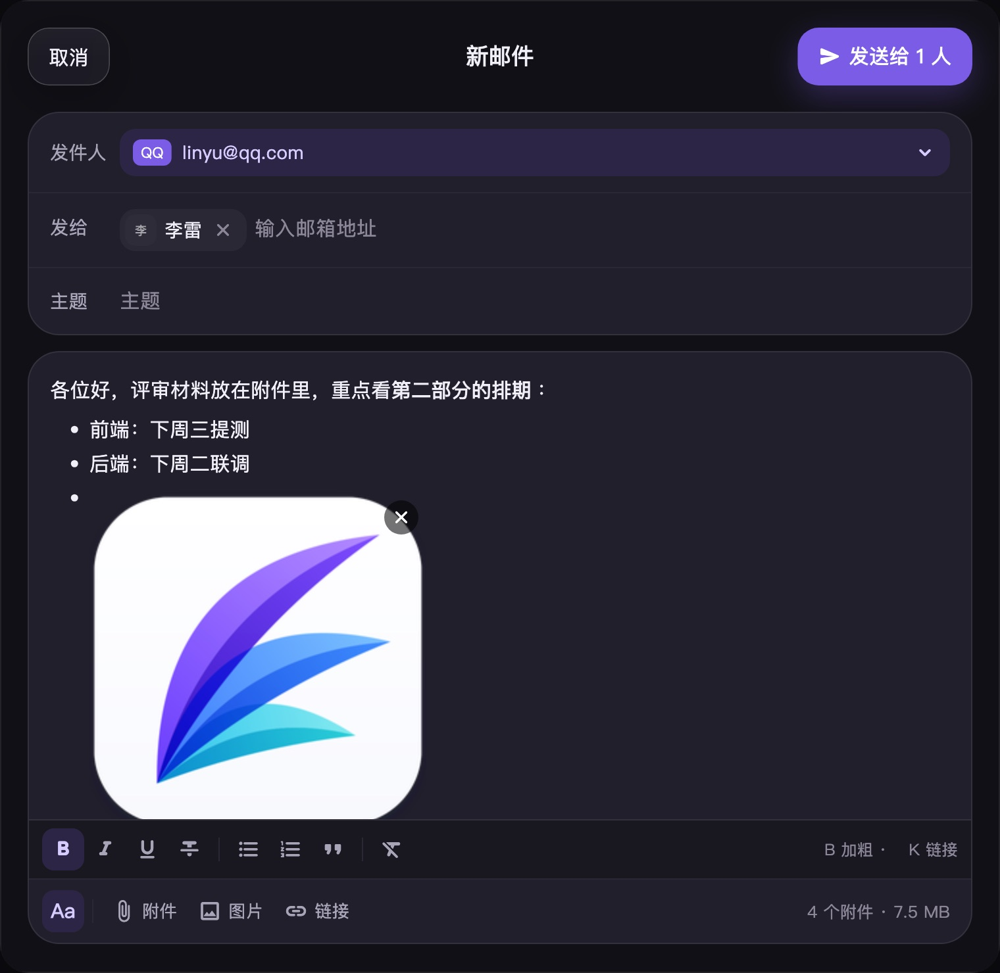
问它「我有哪些未读邮件」，让它总结一封长信、起草回复、找出待办。发送、删除和归档，都要你在卡片上点了才会执行。
正在看的那封邮件自动成为上下文。一键「总结这封」「起草回复」「提取待办」，起草好的回信可以直接发，也可以转到写信窗口里再改。
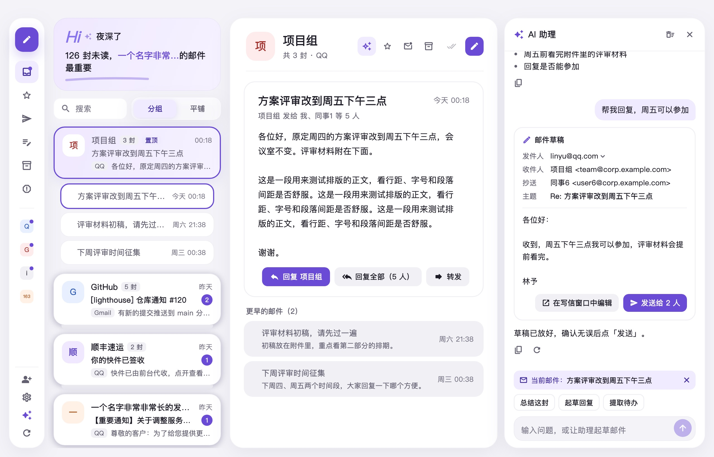
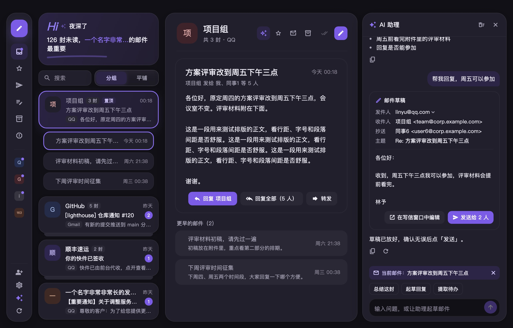
填上 API Key 就能用：OpenAI、DeepSeek、通义千问、Kimi、智谱，也支持 OpenRouter、本机的 Ollama 和任何兼容 OpenAI 接口的服务。可以单独设置代理和请求头。
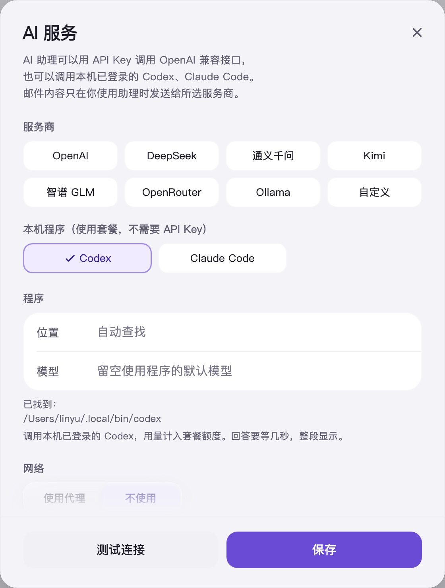
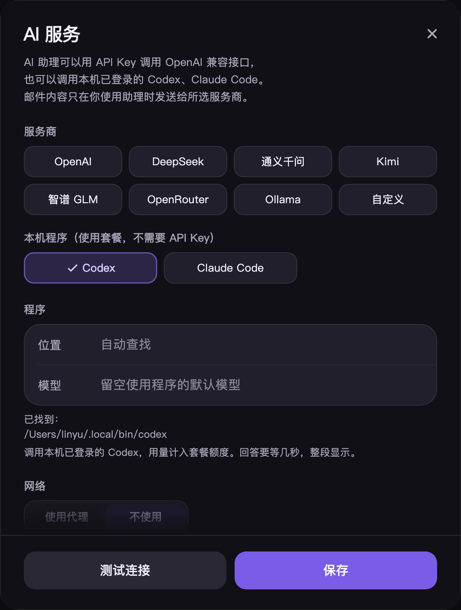
在电脑上，Wren 可以直接调用你已登录的 Codex 或 Claude Code，用的是你现有套餐的额度，不用另外申请 API Key。
调用时关掉了它们执行命令、读写文件的能力，只让它们回答问题。
Wren 没有自己的服务器。收信、发信直接连你的邮箱服务商，中间不经过任何人。
邮箱授权码、AI 的 Key 和代理密码，都存在系统自带的钥匙串或凭据管理器里，不写进普通文件。
邮件里的远程图片默认不显示，避免发件人借图片知道你读了信。信得过的发件人，一键设为总是显示。
邮件内容只在你使用助理时才发给你选的服务商，第一次发送前会先问你。
在 Mac 上设置好，手机扫一下二维码，邮箱、授权码和设置一起过去，不用再输一遍。任何一台都可以出码，也都可以扫码。
二维码两分钟有效、只能用一次。两台设备先互相认证，再加密传输，不经过任何服务器。
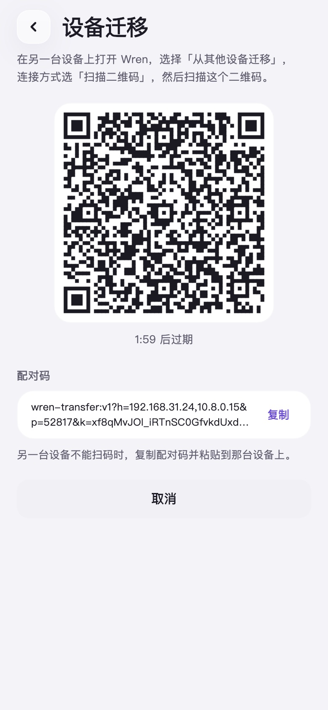
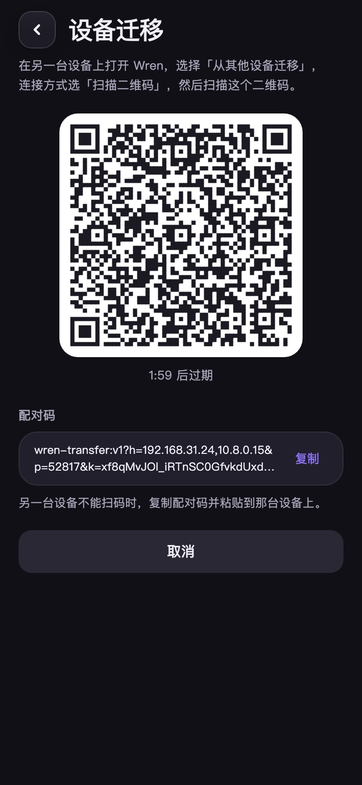
每个邮箱是新增、更新还是保留本机的，哪些需要重新填写授权码，导入前都列给你看。
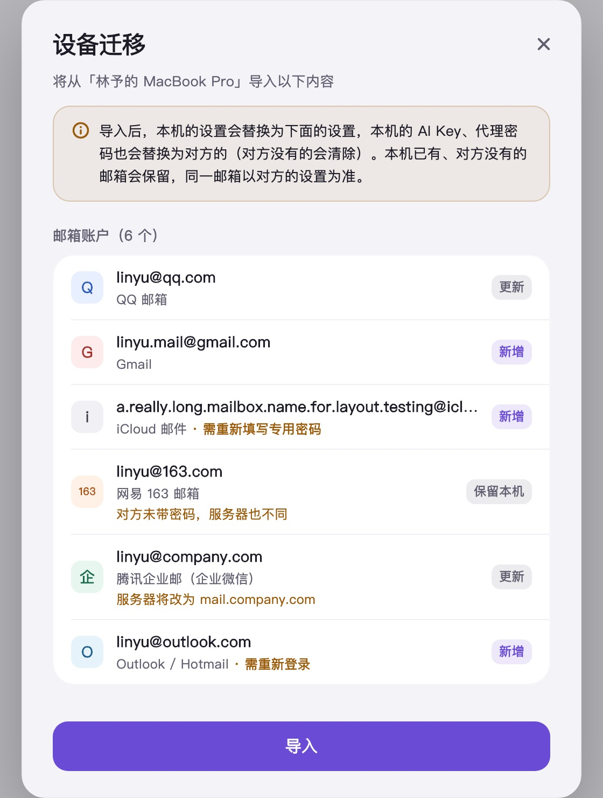
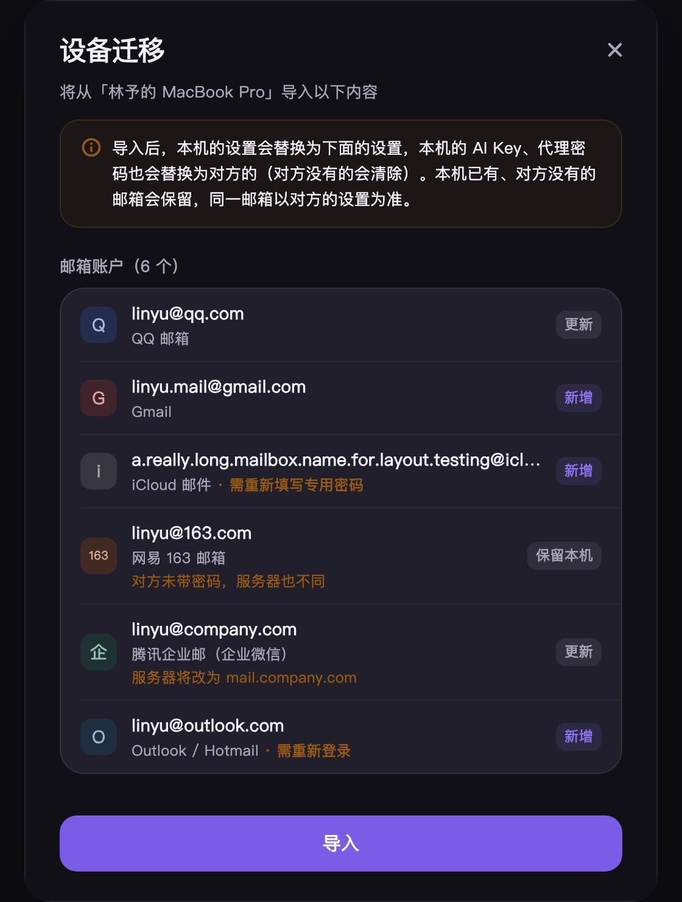
Mac、Windows、iPhone 和 Android 版本正在打磨中。想要的功能、遇到的问题，欢迎在 GitHub 上告诉我们。